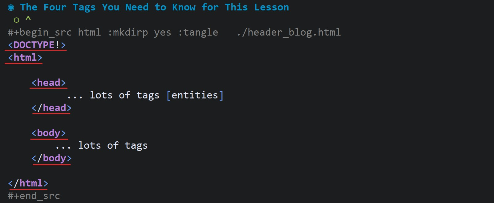
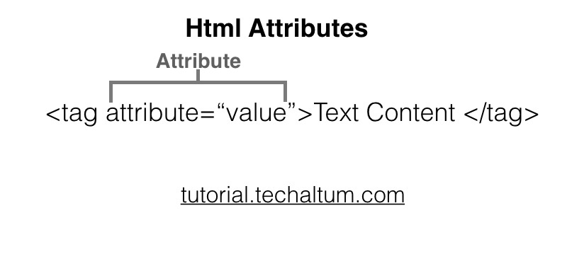
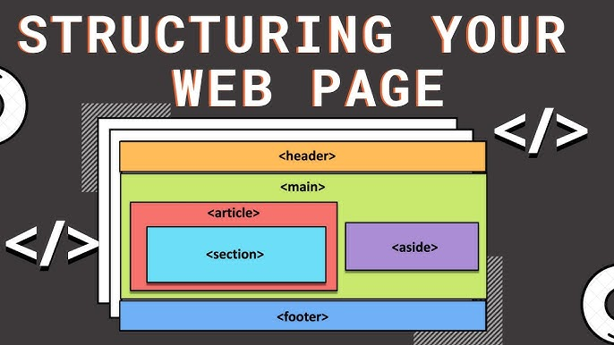
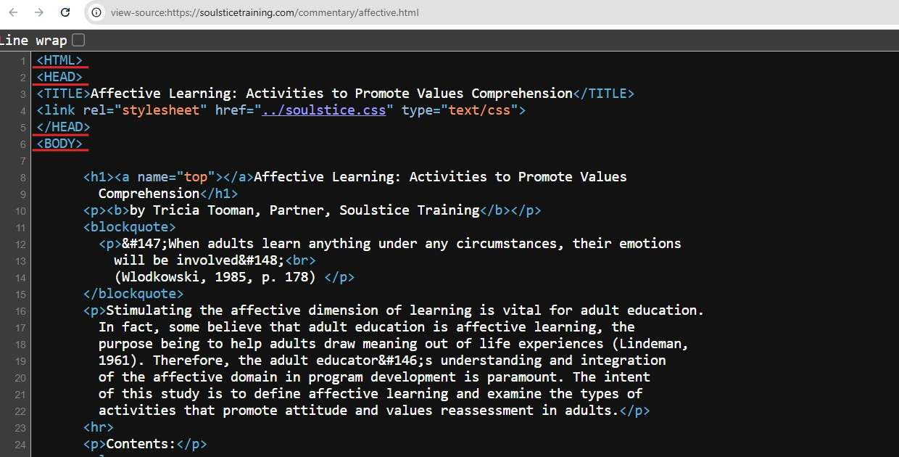
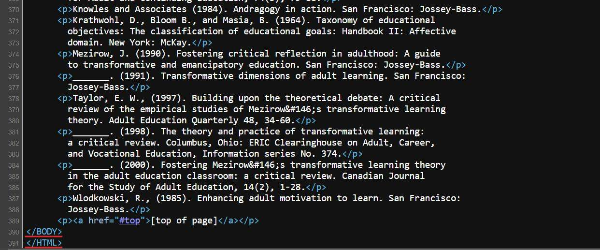

At the end of this lesson, you will list 4 HTML tags
1990 Tim Berners-Lee is a contractor at CERN
[Particle physics laboratory]
[European Organization for Nuclear Research]
He creates HTML to create and navigate links between documents over the internet
Tim Berners-Lee
The User enters a URL into the address bar and presses enter
The request goes to the server ….
…. the server returns data to the users computer
[HTTP response]
The browser gets the data and parses it into JavaScript objects
Which are entities called nodes, that live in a JavaScript
’runtime’ or ’environment’
A keyword enclosed in brackets < >
<DOCTYPE!> - no closing tag
Some ’tags’ have an opening and closing tag
<html> - opening tag
</html> - closing tag




